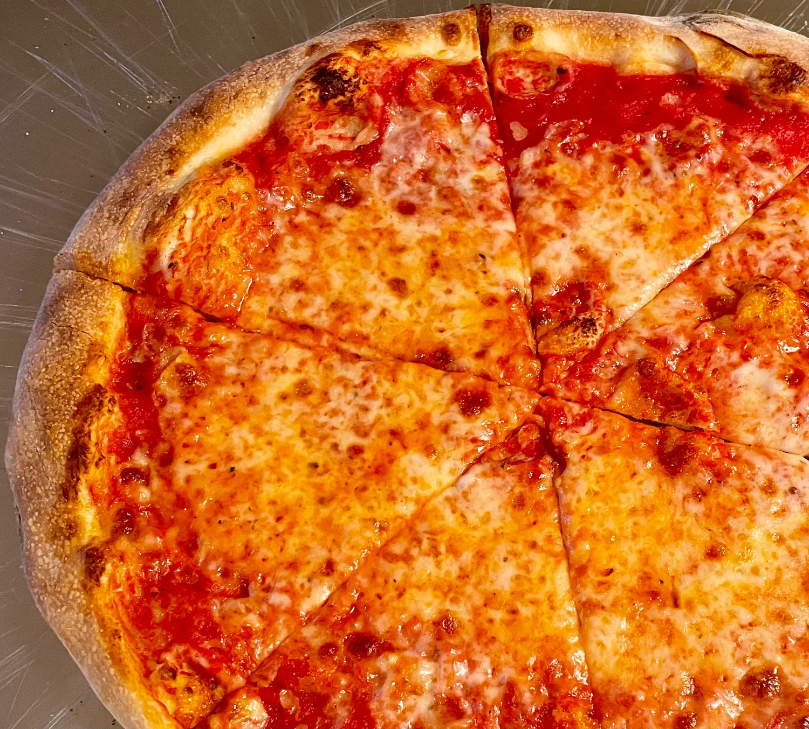

New York Style Pizza
Description:
New York-style pizza hails from New York City.
It's known for its circular shape, cut into huge wedges with a thin
and foldable (but still crisp) crust and topped with mozzarella cheese.
Ingredients
- 1 teaspoon active dry yeast
- ⅔ cup warm water (110 degrees F/45 degrees C)
- 2 cups all-purpose flour
- 1 teaspoon salt
- 2 tablespoons olive oil
- 1 (10 ounce) can tomato sauce
- 1 pound shredded mozzarella cheese
- ½ cup grated Romano cheese
- ¼ cup chopped fresh basil
- 1 tablespoon dried oregano
- 1 teaspoon red pepper flakes
- 2 tablespoons olive oil
Preparation:
- Sprinkle yeast over surface of warm water in a large bowl.
Let stand for 1 minute, then stir to dissolve. Mix in flour, salt,
and olive oil. When dough is too thick to stir, turn out onto a
floured surface and knead for 5 minutes. Knead in a little more
flour if dough is too sticky. Place into an oiled bowl, cover,
and set aside in a warm place to rise until doubled in bulk.
- Preheat the oven to 475 degrees F (245 degrees C). If using a
pizza stone, preheat it in the oven as well, setting it on the lowest shelf.
- When dough has risen, flatten it out on a lightly floured surface.
Roll or stretch out into a 12-inch circle, and place on a baking pan.
If you are using a pizza stone, you may place it on a piece of
parchment while preheating the stone in the oven.
- Spread tomato sauce evenly over dough. Sprinkle with oregano,
mozzarella cheese, basil, Romano cheese, and red pepper flakes.
- Bake for 12 to 15 minutes in the preheated oven, until bottom of
crust is browned when you lift up the edge a little, and cheese
is melted and bubbly. Cool for about 5 minutes before slicing and
serving.

Home